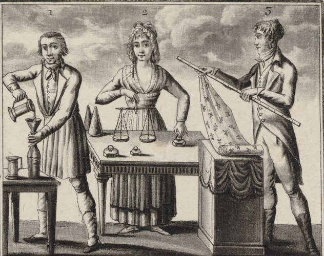
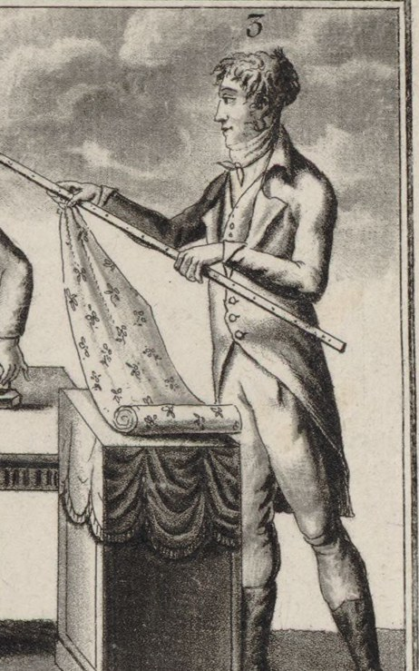

Meters and Centimeters
Today: measure lengths longer than 1 meter with a meter stick and a centimeter ruler, and write a length in meters and centimeters or in centimeters only. Dimensions Math 3B, Chapter 11, Lesson 1 · Meters and Centimeters

Paris, France · about 230 years ago

How are meters and centimeters related?
One meter is 100 centimeters. A length can be written in meters and centimeters, or in centimeters only.
You will…
- Measure things longer than 1 meter with a meter stick and a centimeter ruler.
- Write one length two ways: in meters and centimeters, and in centimeters only.
- Compare two lengths after you write them in the same unit.
Why the meter?
On the left is a real print sold in Paris in 1800, when France was changing to new measures. Each small picture shows one new measure in use. In picture 3, a man measures cloth with a meter stick. On the right is a real marble meter on a wall in Paris. People could hold their own measuring sticks up to it to check them.

In the 1790s, two French scientists measured a long line across the land, from Dunkirk in France to Barcelona in Spain. They did it to decide exactly how long one meter should be. In 1796 and 1797, Paris set 16 marble meters into walls around the city, so anyone could check a measuring stick. Two of them are still there today.
Today's math: one meter is 100 centimeters. When something is longer than one meter stick, measure the rest with a centimeter ruler. Then say the length two ways.
One meter is 100 centimeters, so today you'll use hundreds a lot. Warm up with these. Type each answer, then check. You can fix any answer and check again.
How long is the crayon?
A crayon lying on a centimeter ruler. The flat end of the crayon is on 0.
Think: The Cloth Check
🔨 Do · ✏️ WriteParis, 1796. A cloth seller wants to check a piece of cloth with the new meter. The cloth is longer than one meter stick. How long is it?
The cloth is at the top. The gold line shows where the cloth ends. Below are two tools: a meter stick, which is exactly 1 meter long, and a centimeter ruler.
Lay the meter stick
Drag the meter stick onto the cloth.
Measure the rest
Drag the centimeter ruler to the end of the meter stick.
Read the tools
Now in centimeters only
Two ways to say it
Same cloth, two ways. 1 m 37 cm and 137 cm are the same length. The meter stick is the 100 centimeters.
One meter is 100 centimeters
- Start at 0. Lay the meter stick at the end of the thing you measure. That is 1 meter.
- Measure the rest. Put the centimeter ruler where the meter stick ends. Read the mark where the thing ends.
- Meters and centimeters to centimeters only. Each meter is 100 centimeters. A rope that is 1 m 46 cm is 100 cm + 46 cm = 146 cm.
- Centimeters only to meters and centimeters. Every hundred centimeters makes 1 meter. A path that is 935 cm is 9 m 35 cm.
- Watch the zero. 8 m 3 cm is 800 cm + 3 cm = 803 cm, not 83 cm.
When you write one length using two units, like 1 m 46 cm, you are using meters and centimeters together.
Four ways to work with meters and centimeters
Your Turn: The Shelf Board
🔨 DoA carpenter in Paris cuts a shelf board. The board is 152 cm long. He wants to write its length in meters and centimeters.
The board is at the top, and the gold line shows where it ends. The meter stick and the centimeter ruler are below.
Lay the meter stick
Drag the meter stick onto the board.
Measure the rest
Drag the centimeter ruler to the end of the meter stick.
Meters and centimeters
Now the other way
His curtain rod is 8 m 90 cm long.
Juno Loses the Zero
🔨 Do · ✏️ WriteA rope maker's rope is 9 m 4 cm long. Juno writes it in centimeters and says, "Ninety-four centimeters!"
The top picture shows the rope as 9 meter sticks and 4 more centimeters. The bottom picture puts Juno's 94 centimeters next to one meter stick.
Look at Juno's answer
The meters first
Add the centimeters
Help Juno
Leo Starts at 1
🔨 Do · ✏️ WriteLeo measures a quill pen. He lines up its end with the 1 on the ruler. Then he reads the mark at the tip and says, "Nineteen centimeters."
A quill pen, the feather pen people wrote with long ago, lying on a centimeter ruler. The red line shows where its end is now.
Start at zero
Drag the quill pen so its end is on 0.
Read the length
How far off was Leo?
Help Leo
Kai Picks the Bigger Number
🔨 Do · ✏️ WriteKai has a cord that is 98 cm long. He says, "My cord is longer than 1 meter, because 98 is bigger than 1."
Kai's blue cord lying on a meter stick. The meter stick is exactly 1 meter long. The red line shows where the cord starts now.
Line them up
Drag the cord so its end is on 0.
Look at the cord
Same unit first
Next, Kai compares 1 m 2 cm and 97 cm. He says 97 cm is longer.
Compare
Drag the right symbol into the box.
Help Kai
The Seller's Order Book
🔨 Do · ✏️ WriteA seller in Paris writes two lengths in his order book. A table is 1 m 68 cm long. A garden wall is 738 cm long. Write each one the other way.
The table with a meter stick and a centimeter ruler already laid along it. The gold line shows where the table ends.
The table
The garden wall
Tell how you know
Check It on the Marble Meter
🔨 DoYou are the cloth seller now! A customer wants two ribbons. Cut each one to the right length on the marble meter. A centimeter ruler sits right after it.
The white stone is the marble meter, exactly 1 meter long. The blue centimeter ruler starts where the marble meter ends. The purple ribbon starts at 0, and you can drag its ✂ end.
Problem 1 · Cut 1 m 8 cm
Drag the ✂ end of the ribbon to 1 m 8 cm.
Problem 1 · Say it in centimeters
Problem 2 · Cut 141 cm
Drag the ✂ end of the ribbon to 141 cm.
Problem 2 · Say it in meters and centimeters
Prove It
✏️ WriteProblem 3 · Prove It
Rope or Wire?
A rope is 8 m 6 cm long. A wire is 860 cm long. Which is longer, and by how many centimeters?
Turn in your work
- Check the list below. Jobs 1 to 8 are required. The Bonus is optional.
- Press 📋 Gather my answers, then 📋 Copy. Or press 🖨️ Print or save as PDF.
- Open this lesson's assignment in Canvas.
- Paste your answers (or upload your PDF and journal photo), then press Submit.
All my answers
Your answers and your work on this page save on this device as you go.
Before you turn in
- I finished Jobs 1 to 8.
- I measured past one meter and wrote a length two ways.
- I showed in my math journal how I changed meters to centimeters.
- I tried the Bonus. (optional)
Lesson 3.11.02 · Subtracting from Meters
Next time, the cloth seller cuts some ribbon off a long piece. You'll take centimeters away from whole meters and find out how much is left.
The "Clock" Symphony
The slow part of a symphony by Joseph Haydn, first played in London in 1794. Listen for the steady tick, tock under the tune, even and regular like the marks on a meter stick.
Symphony No. 101 in D major, "The Clock," Hob. I:101, second part (Andante), Joseph Haydn (1794). Recording by The Geneva Camerata, via Wikimedia Commons, CC BY 3.0.